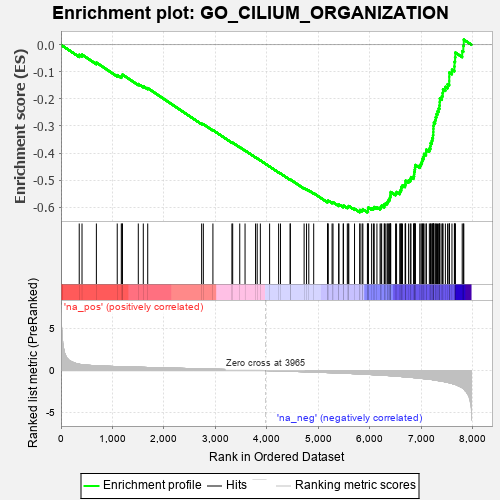
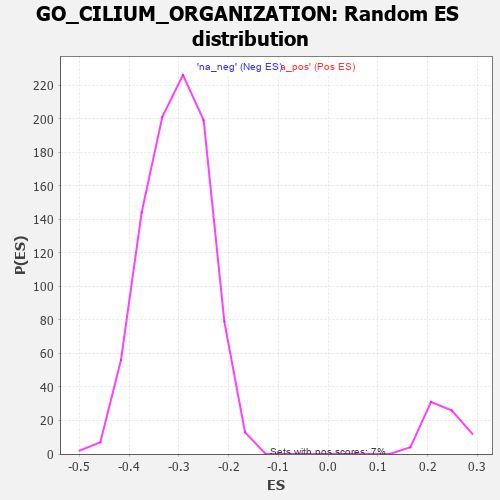

| | | Dataset | 7d |
| Phenotype | NoPhenotypeAvailable |
| Upregulated in class | na_neg |
| GeneSet | GO_CILIUM_ORGANIZATION |
| Enrichment Score (ES) | -0.6192124 |
| Normalized Enrichment Score (NES) | -2.0265636 |
| Nominal p-value | 0.0 |
| FDR q-value | 9.141873E-4 |
| FWER p-Value | 0.002 |
Table: GSEA Results Summary

Fig 1: Enrichment plot: GO_CILIUM_ORGANIZATION
Profile of the Running ES Score & Positions of GeneSet Members on the Rank Ordered List
| PROBE | GENE SYMBOL | GENE_TITLE | RANK IN GENE LIST | RANK METRIC SCORE | RUNNING ES | CORE ENRICHMENT | | 1 | TAPT1 | | | 354 | 0.743 | -0.0371 | No |
| 2 | OCRL | | | 408 | 0.691 | -0.0364 | No |
| 3 | TTC36 | | | 687 | 0.563 | -0.0657 | No |
| 4 | CDK10 | | | 1092 | 0.465 | -0.1122 | No |
| 5 | RFX3 | | | 1171 | 0.451 | -0.1172 | No |
| 6 | NEDD1 | | | 1186 | 0.449 | -0.1142 | No |
| 7 | STK36 | | | 1193 | 0.448 | -0.1101 | No |
| 8 | E2F4 | | | 1501 | 0.390 | -0.1450 | No |
| 9 | LCA5L | | | 1598 | 0.374 | -0.1532 | No |
| 10 | TNPO1 | | | 1684 | 0.359 | -0.1601 | No |
| 11 | DCTN3 | | | 2731 | 0.193 | -0.2914 | No |
| 12 | TTLL1 | | | 2764 | 0.189 | -0.2934 | No |
| 13 | RAB17 | | | 2950 | 0.157 | -0.3153 | No |
| 14 | RAB8A | | | 3319 | 0.102 | -0.3611 | No |
| 15 | RFX4 | | | 3334 | 0.099 | -0.3618 | No |
| 16 | ATG3 | | | 3471 | 0.081 | -0.3783 | No |
| 17 | EXOC5 | | | 3574 | 0.064 | -0.3906 | No |
| 18 | CEP19 | | | 3778 | 0.031 | -0.4162 | No |
| 19 | SFI1 | | | 3810 | 0.026 | -0.4198 | No |
| 20 | NEK2 | | | 3871 | 0.016 | -0.4273 | No |
| 21 | ATG5 | | | 4051 | -0.016 | -0.4500 | No |
| 22 | BBIP1 | | | 4226 | -0.046 | -0.4716 | No |
| 23 | WDR11 | | | 4262 | -0.052 | -0.4756 | No |
| 24 | KIF3B | | | 4450 | -0.085 | -0.4985 | No |
| 25 | SPAG1 | | | 4453 | -0.085 | -0.4978 | No |
| 26 | DCX | | | 4721 | -0.143 | -0.5303 | No |
| 27 | POC1A | | | 4768 | -0.151 | -0.5345 | No |
| 28 | CEP97 | | | 4812 | -0.160 | -0.5383 | No |
| 29 | IFT43 | | | 4907 | -0.179 | -0.5483 | No |
| 30 | DCTN2 | | | 5175 | -0.243 | -0.5797 | No |
| 31 | HDAC6 | | | 5183 | -0.244 | -0.5780 | No |
| 32 | PARVA | | | 5187 | -0.245 | -0.5757 | No |
| 33 | CDK1 | | | 5264 | -0.262 | -0.5826 | No |
| 34 | CEP70 | | | 5282 | -0.267 | -0.5818 | No |
| 35 | KIF19 | | | 5392 | -0.294 | -0.5926 | No |
| 36 | PLK4 | | | 5397 | -0.295 | -0.5899 | No |
| 37 | KIF3A | | | 5480 | -0.313 | -0.5969 | No |
| 38 | CEP76 | | | 5485 | -0.315 | -0.5940 | No |
| 39 | EHD1 | | | 5560 | -0.336 | -0.5998 | No |
| 40 | NDE1 | | | 5578 | -0.339 | -0.5983 | No |
| 41 | TTC17 | | | 5589 | -0.341 | -0.5959 | No |
| 42 | TTBK2 | | | 5700 | -0.376 | -0.6059 | No |
| 43 | IFT46 | | | 5802 | -0.406 | -0.6143 | Yes |
| 44 | BBS4 | | | 5806 | -0.407 | -0.6103 | Yes |
| 45 | ARL6 | | | 5847 | -0.417 | -0.6109 | Yes |
| 46 | BBS5 | | | 5862 | -0.421 | -0.6081 | Yes |
| 47 | DCTN1 | | | 5950 | -0.454 | -0.6143 | Yes |
| 48 | CNTRL | | | 5961 | -0.459 | -0.6106 | Yes |
| 49 | B9D1 | | | 5962 | -0.459 | -0.6056 | Yes |
| 50 | CENPJ | | | 5968 | -0.460 | -0.6013 | Yes |
| 51 | CKAP5 | | | 6032 | -0.482 | -0.6041 | Yes |
| 52 | HYLS1 | | | 6067 | -0.495 | -0.6031 | Yes |
| 53 | PLK1 | | | 6082 | -0.500 | -0.5994 | Yes |
| 54 | IFT80 | | | 6135 | -0.515 | -0.6005 | Yes |
| 55 | B9D2 | | | 6196 | -0.535 | -0.6023 | Yes |
| 56 | LCA5 | | | 6213 | -0.540 | -0.5985 | Yes |
| 57 | EHD4 | | | 6227 | -0.545 | -0.5943 | Yes |
| 58 | DRC1 | | | 6278 | -0.565 | -0.5945 | Yes |
| 59 | IFT52 | | | 6280 | -0.566 | -0.5885 | Yes |
| 60 | IFT57 | | | 6307 | -0.579 | -0.5856 | Yes |
| 61 | IFT88 | | | 6335 | -0.590 | -0.5826 | Yes |
| 62 | IFT27 | | | 6348 | -0.596 | -0.5777 | Yes |
| 63 | ARMC2 | | | 6363 | -0.602 | -0.5730 | Yes |
| 64 | BBS2 | | | 6383 | -0.608 | -0.5688 | Yes |
| 65 | CDKL1 | | | 6388 | -0.610 | -0.5627 | Yes |
| 66 | BBS1 | | | 6397 | -0.616 | -0.5571 | Yes |
| 67 | IFT22 | | | 6400 | -0.617 | -0.5506 | Yes |
| 68 | NEK1 | | | 6402 | -0.618 | -0.5441 | Yes |
| 69 | RTTN | | | 6497 | -0.659 | -0.5489 | Yes |
| 70 | CEP41 | | | 6516 | -0.669 | -0.5440 | Yes |
| 71 | RPGR | | | 6579 | -0.699 | -0.5443 | Yes |
| 72 | ALMS1 | | | 6590 | -0.704 | -0.5379 | Yes |
| 73 | MKS1 | | | 6607 | -0.715 | -0.5322 | Yes |
| 74 | TUB | | | 6611 | -0.718 | -0.5248 | Yes |
| 75 | WWTR1 | | | 6631 | -0.729 | -0.5194 | Yes |
| 76 | TTC8 | | | 6682 | -0.753 | -0.5176 | Yes |
| 77 | CATIP | | | 6690 | -0.756 | -0.5103 | Yes |
| 78 | OFD1 | | | 6692 | -0.758 | -0.5022 | Yes |
| 79 | KIF27 | | | 6750 | -0.786 | -0.5010 | Yes |
| 80 | C2CD3 | | | 6783 | -0.802 | -0.4964 | Yes |
| 81 | WDR19 | | | 6796 | -0.812 | -0.4891 | Yes |
| 82 | CEP72 | | | 6846 | -0.839 | -0.4862 | Yes |
| 83 | TTLL3 | | | 6857 | -0.845 | -0.4784 | Yes |
| 84 | AHI1 | | | 6860 | -0.848 | -0.4694 | Yes |
| 85 | NINL | | | 6869 | -0.851 | -0.4612 | Yes |
| 86 | ARMC9 | | | 6875 | -0.852 | -0.4526 | Yes |
| 87 | IQCB1 | | | 6882 | -0.856 | -0.4441 | Yes |
| 88 | TTC29 | | | 6967 | -0.917 | -0.4449 | Yes |
| 89 | NPHP4 | | | 6991 | -0.931 | -0.4378 | Yes |
| 90 | DZIP1 | | | 7009 | -0.940 | -0.4298 | Yes |
| 91 | CEP83 | | | 7020 | -0.950 | -0.4207 | Yes |
| 92 | ARL3 | | | 7041 | -0.963 | -0.4128 | Yes |
| 93 | PIBF1 | | | 7049 | -0.966 | -0.4033 | Yes |
| 94 | BBS7 | | | 7089 | -0.988 | -0.3975 | Yes |
| 95 | TTC25 | | | 7094 | -0.992 | -0.3873 | Yes |
| 96 | WDR60 | | | 7153 | -1.038 | -0.3835 | Yes |
| 97 | HYDIN | | | 7173 | -1.049 | -0.3745 | Yes |
| 98 | TEKT2 | | | 7177 | -1.053 | -0.3635 | Yes |
| 99 | CETN2 | | | 7200 | -1.070 | -0.3547 | Yes |
| 100 | IFT74 | | | 7211 | -1.085 | -0.3442 | Yes |
| 101 | TCHP | | | 7224 | -1.099 | -0.3339 | Yes |
| 102 | LRGUK | | | 7229 | -1.101 | -0.3224 | Yes |
| 103 | RSPH1 | | | 7231 | -1.101 | -0.3106 | Yes |
| 104 | WDR34 | | | 7233 | -1.103 | -0.2988 | Yes |
| 105 | FBF1 | | | 7241 | -1.111 | -0.2877 | Yes |
| 106 | RSPH9 | | | 7265 | -1.137 | -0.2783 | Yes |
| 107 | IFT81 | | | 7277 | -1.151 | -0.2672 | Yes |
| 108 | KIF17 | | | 7291 | -1.160 | -0.2563 | Yes |
| 109 | ARMC4 | | | 7311 | -1.181 | -0.2460 | Yes |
| 110 | CYLD | | | 7333 | -1.206 | -0.2356 | Yes |
| 111 | TEKT1 | | | 7349 | -1.220 | -0.2243 | Yes |
| 112 | CEP89 | | | 7354 | -1.223 | -0.2115 | Yes |
| 113 | WDR35 | | | 7357 | -1.225 | -0.1985 | Yes |
| 114 | WDR78 | | | 7396 | -1.261 | -0.1897 | Yes |
| 115 | WDR63 | | | 7411 | -1.276 | -0.1777 | Yes |
| 116 | SPEF2 | | | 7418 | -1.289 | -0.1645 | Yes |
| 117 | CEP78 | | | 7464 | -1.354 | -0.1556 | Yes |
| 118 | BBOF1 | | | 7507 | -1.401 | -0.1457 | Yes |
| 119 | TEKT4 | | | 7539 | -1.455 | -0.1339 | Yes |
| 120 | GAS8 | | | 7540 | -1.455 | -0.1182 | Yes |
| 121 | IQCG | | | 7541 | -1.455 | -0.1024 | Yes |
| 122 | SAXO1 | | | 7592 | -1.543 | -0.0921 | Yes |
| 123 | CROCC | | | 7639 | -1.628 | -0.0803 | Yes |
| 124 | MNS1 | | | 7642 | -1.633 | -0.0629 | Yes |
| 125 | IQUB | | | 7653 | -1.653 | -0.0462 | Yes |
| 126 | TEKT3 | | | 7658 | -1.657 | -0.0288 | Yes |
| 127 | NPHP1 | | | 7791 | -2.041 | -0.0235 | Yes |
| 128 | DCDC2 | | | 7813 | -2.099 | -0.0035 | Yes |
| 129 | PKD2 | | | 7822 | -2.167 | 0.0190 | Yes |
Table: GSEA details [plain text format]

Fig 2: GO_CILIUM_ORGANIZATION: Random ES distribution
Gene set null distribution of ES for GO_CILIUM_ORGANIZATION